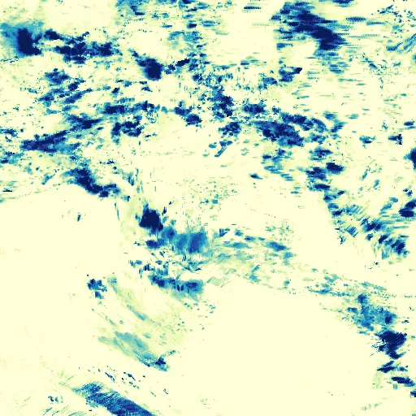

Benchmark / Near-lossless / imerg-pcp-12 / imerg-pcp-12-05
imerg-pcp-12-05
north-australia · 2023-01-26 · sample details

Metadata
| id | imerg-pcp-12-05 |
|---|---|
| source | NASA/GPM_L3/IMERG_V07 (GPM IMERG Final Run V07, half-hourly) |
| asset | NASA/GPM_L3/IMERG_V07/20230126120000NASA/GPM_L3/IMERG_V07/20230126123000NASA/GPM_L3/IMERG_V07/20230126130000and 9 more |
| crs | EPSG:4326 |
| transform | 104.4 0.1 0.0 10.6 0.0 -0.1 |
| datetime_start | 2023-01-26T12:00:00Z |
| datetime_end | 2023-01-26T18:00:00Z |
| bands | precipitation to precipitation, 12 planes |
| shape | 12x512x512 |
| dtype | uint16 |
| unit | mm/hr |
| scale | 0.009999999776482582 |
| offset | 0 |
| input_sha256 | 573b3f64d2eac1de07891b2e37ab53fb1394cef16ed1aa98b3b8f6b634a1460a |
| site | north-australia |
| regime | monsoon |
| lon | 130.0 |
| lat | -15.0 |
| grid_column | 2844 |
| grid_row | 794 |